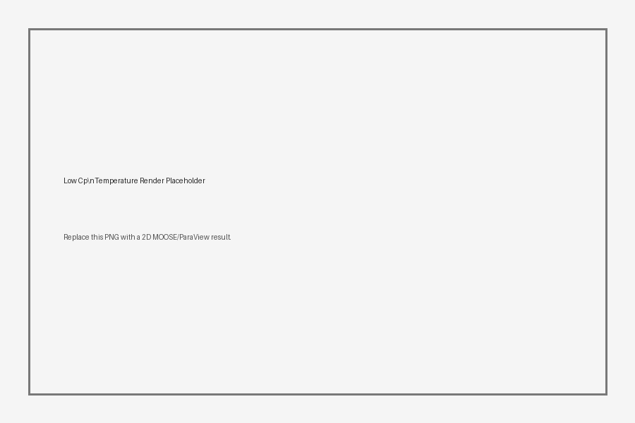

Project Purpose
This page summarizes the workflow and provides lightweight visualization tools for interpreting sensitivity-analysis results.
Key Parameters
| Parameter | Meaning | Expected Effect |
|---|---|---|
| Heat Capacity | Thermal energy storage | Affects transient temperature response |
| Thermal Conductivity | Heat diffusion | Affects spatial temperature gradients |
Interactive Sensitivity Viewer
Move the slider to select a precomputed heat-capacity case.
Temperature Distribution

Placeholder 2D temperature rendering.
Sensitivity Plot
Example plot with placeholder error bars.
Workflow Notes
- Prepare or modify the MOOSE input file.
- Run the parameter sweep.
- Postprocess output into CSV/JSON format.
- Export 2D temperature renderings for each parameter case.
- Update
data/sensitivity_results.jsonandscript.js.
Common Issues
| Issue | Likely Cause | Fix |
|---|---|---|
| Simulation does not converge | Parameter value outside stable range | Check units, bounds, and timestep |
| Figure does not update | Missing image path or JSON data | Check file names in script.js |